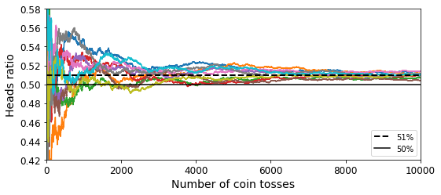
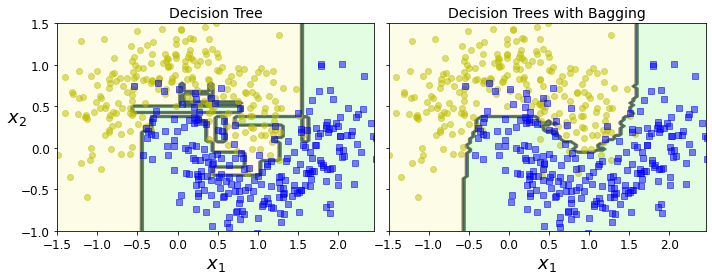
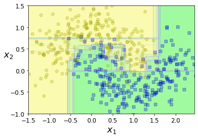
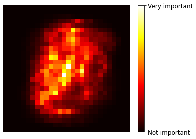
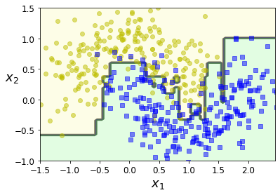
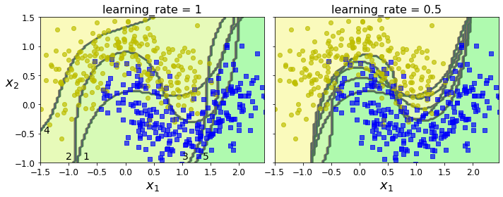
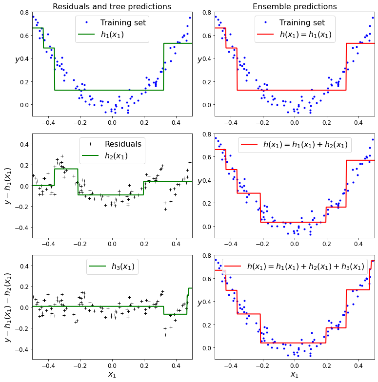
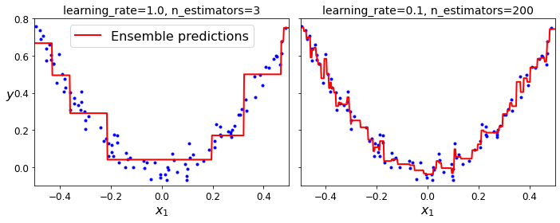
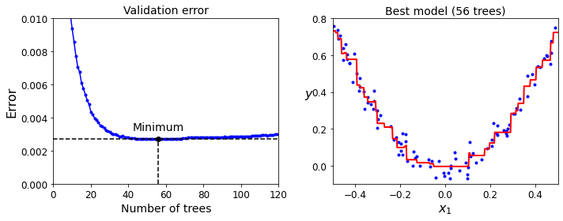

# Python ≥3.5 is required
import sys
assert sys.version_info >= (3, 5)
# Scikit-Learn ≥0.20 is required
import sklearn
assert sklearn.__version__ >= "0.20"
# Common imports
import numpy as np
import os
# to make this notebook's output stable across runs
np.random.seed(42)
# To plot pretty figures
%matplotlib inline
import matplotlib as mpl
import matplotlib.pyplot as plt
mpl.rc('axes', labelsize=14)
mpl.rc('xtick', labelsize=12)
mpl.rc('ytick', labelsize=12)
# Where to save the figures
PROJECT_ROOT_DIR = "."
CHAPTER_ID = "ensembles"
IMAGES_PATH = os.path.join(PROJECT_ROOT_DIR, "images", CHAPTER_ID)
os.makedirs(IMAGES_PATH, exist_ok=True)
def save_fig(fig_id, tight_layout=True, fig_extension="png", resolution=300):
path = os.path.join(IMAGES_PATH, fig_id + "." + fig_extension)
print("Saving figure", fig_id)
if tight_layout:
plt.tight_layout()
plt.savefig(path, format=fig_extension, dpi=resolution)Chapter 7 – Ensemble Learning and Random Forests
This notebook contains all the sample code and solutions to the exercises in chapter 7.
Setup
First, let’s import a few common modules, ensure MatplotLib plots figures inline and prepare a function to save the figures. We also check that Python 3.5 or later is installed (although Python 2.x may work, it is deprecated so we strongly recommend you use Python 3 instead), as well as Scikit-Learn ≥0.20.
Voting Classifiers
heads_proba = 0.51
coin_tosses = (np.random.rand(10000, 10) < heads_proba).astype(np.int32)
cumulative_heads_ratio = np.cumsum(coin_tosses, axis=0) / np.arange(1, 10001).reshape(-1, 1)Code to generate Figure 7–3. The law of large numbers:
plt.figure(figsize=(8,3.5))
plt.plot(cumulative_heads_ratio)
plt.plot([0, 10000], [0.51, 0.51], "k--", linewidth=2, label="51%")
plt.plot([0, 10000], [0.5, 0.5], "k-", label="50%")
plt.xlabel("Number of coin tosses")
plt.ylabel("Heads ratio")
plt.legend(loc="lower right")
plt.axis([0, 10000, 0.42, 0.58])
save_fig("law_of_large_numbers_plot")
plt.show()Saving figure law_of_large_numbers_plot
Let’s use the moons dataset:
from sklearn.model_selection import train_test_split
from sklearn.datasets import make_moons
X, y = make_moons(n_samples=500, noise=0.30, random_state=42)
X_train, X_test, y_train, y_test = train_test_split(X, y, random_state=42)Note: to be future-proof, we set solver="lbfgs", n_estimators=100, and gamma="scale" since these will be the default values in upcoming Scikit-Learn versions.
Code examples:
from sklearn.ensemble import RandomForestClassifier
from sklearn.ensemble import VotingClassifier
from sklearn.linear_model import LogisticRegression
from sklearn.svm import SVC
log_clf = LogisticRegression(solver="lbfgs", random_state=42)
rnd_clf = RandomForestClassifier(n_estimators=100, random_state=42)
svm_clf = SVC(gamma="scale", random_state=42)
voting_clf = VotingClassifier(
estimators=[('lr', log_clf), ('rf', rnd_clf), ('svc', svm_clf)],
voting='hard')voting_clf.fit(X_train, y_train)VotingClassifier(estimators=[('lr', LogisticRegression(random_state=42)),
('rf', RandomForestClassifier(random_state=42)),
('svc', SVC(random_state=42))])from sklearn.metrics import accuracy_score
for clf in (log_clf, rnd_clf, svm_clf, voting_clf):
clf.fit(X_train, y_train)
y_pred = clf.predict(X_test)
print(clf.__class__.__name__, accuracy_score(y_test, y_pred))LogisticRegression 0.864
RandomForestClassifier 0.896
SVC 0.896
VotingClassifier 0.912Note: the results in this notebook may differ slightly from the book, as Scikit-Learn algorithms sometimes get tweaked.
Soft voting:
log_clf = LogisticRegression(solver="lbfgs", random_state=42)
rnd_clf = RandomForestClassifier(n_estimators=100, random_state=42)
svm_clf = SVC(gamma="scale", probability=True, random_state=42)
voting_clf = VotingClassifier(
estimators=[('lr', log_clf), ('rf', rnd_clf), ('svc', svm_clf)],
voting='soft')
voting_clf.fit(X_train, y_train)VotingClassifier(estimators=[('lr', LogisticRegression(random_state=42)),
('rf', RandomForestClassifier(random_state=42)),
('svc', SVC(probability=True, random_state=42))],
voting='soft')from sklearn.metrics import accuracy_score
for clf in (log_clf, rnd_clf, svm_clf, voting_clf):
clf.fit(X_train, y_train)
y_pred = clf.predict(X_test)
print(clf.__class__.__name__, accuracy_score(y_test, y_pred))LogisticRegression 0.864
RandomForestClassifier 0.896
SVC 0.896
VotingClassifier 0.92Bagging and Pasting
Bagging and Pasting in Scikit-Learn
from sklearn.ensemble import BaggingClassifier
from sklearn.tree import DecisionTreeClassifier
bag_clf = BaggingClassifier(
DecisionTreeClassifier(), n_estimators=500,
max_samples=100, bootstrap=True, random_state=42)
bag_clf.fit(X_train, y_train)
y_pred = bag_clf.predict(X_test)from sklearn.metrics import accuracy_score
print(accuracy_score(y_test, y_pred))0.904tree_clf = DecisionTreeClassifier(random_state=42)
tree_clf.fit(X_train, y_train)
y_pred_tree = tree_clf.predict(X_test)
print(accuracy_score(y_test, y_pred_tree))0.856Code to generate Figure 7–5. A single Decision Tree (left) versus a bagging ensemble of 500 trees (right):
from matplotlib.colors import ListedColormap
def plot_decision_boundary(clf, X, y, axes=[-1.5, 2.45, -1, 1.5], alpha=0.5, contour=True):
x1s = np.linspace(axes[0], axes[1], 100)
x2s = np.linspace(axes[2], axes[3], 100)
x1, x2 = np.meshgrid(x1s, x2s)
X_new = np.c_[x1.ravel(), x2.ravel()]
y_pred = clf.predict(X_new).reshape(x1.shape)
custom_cmap = ListedColormap(['#fafab0','#9898ff','#a0faa0'])
plt.contourf(x1, x2, y_pred, alpha=0.3, cmap=custom_cmap)
if contour:
custom_cmap2 = ListedColormap(['#7d7d58','#4c4c7f','#507d50'])
plt.contour(x1, x2, y_pred, cmap=custom_cmap2, alpha=0.8)
plt.plot(X[:, 0][y==0], X[:, 1][y==0], "yo", alpha=alpha)
plt.plot(X[:, 0][y==1], X[:, 1][y==1], "bs", alpha=alpha)
plt.axis(axes)
plt.xlabel(r"$x_1$", fontsize=18)
plt.ylabel(r"$x_2$", fontsize=18, rotation=0)fig, axes = plt.subplots(ncols=2, figsize=(10,4), sharey=True)
plt.sca(axes[0])
plot_decision_boundary(tree_clf, X, y)
plt.title("Decision Tree", fontsize=14)
plt.sca(axes[1])
plot_decision_boundary(bag_clf, X, y)
plt.title("Decision Trees with Bagging", fontsize=14)
plt.ylabel("")
save_fig("decision_tree_without_and_with_bagging_plot")
plt.show()Saving figure decision_tree_without_and_with_bagging_plot
Out-of-Bag evaluation
bag_clf = BaggingClassifier(
DecisionTreeClassifier(), n_estimators=500,
bootstrap=True, oob_score=True, random_state=40)
bag_clf.fit(X_train, y_train)
bag_clf.oob_score_0.8986666666666666bag_clf.oob_decision_function_array([[0.32275132, 0.67724868],
[0.34117647, 0.65882353],
[1. , 0. ],
[0. , 1. ],
[0. , 1. ],
[0.09497207, 0.90502793],
[0.31147541, 0.68852459],
[0.01754386, 0.98245614],
[0.97109827, 0.02890173],
[0.97765363, 0.02234637],
[0.74404762, 0.25595238],
[0. , 1. ],
[0.7173913 , 0.2826087 ],
[0.85026738, 0.14973262],
[0.97222222, 0.02777778],
[0.0625 , 0.9375 ],
[0. , 1. ],
[0.97837838, 0.02162162],
[0.94642857, 0.05357143],
[1. , 0. ],
[0.01704545, 0.98295455],
[0.39473684, 0.60526316],
[0.88700565, 0.11299435],
[1. , 0. ],
[0.97790055, 0.02209945],
[0. , 1. ],
[0.99428571, 0.00571429],
[1. , 0. ],
[0. , 1. ],
[0.62569832, 0.37430168],
[0. , 1. ],
[1. , 0. ],
[0. , 1. ],
[0. , 1. ],
[0.13402062, 0.86597938],
[1. , 0. ],
[0. , 1. ],
[0.38251366, 0.61748634],
[0. , 1. ],
[1. , 0. ],
[0.27093596, 0.72906404],
[0.34146341, 0.65853659],
[1. , 0. ],
[1. , 0. ],
[0. , 1. ],
[1. , 0. ],
[1. , 0. ],
[0. , 1. ],
[1. , 0. ],
[0.00531915, 0.99468085],
[0.98843931, 0.01156069],
[0.91428571, 0.08571429],
[0.97282609, 0.02717391],
[0.98019802, 0.01980198],
[0. , 1. ],
[0.07361963, 0.92638037],
[0.98019802, 0.01980198],
[0.0052356 , 0.9947644 ],
[0. , 1. ],
[0. , 1. ],
[0.97790055, 0.02209945],
[0.8 , 0.2 ],
[0.42424242, 0.57575758],
[1. , 0. ],
[0. , 1. ],
[0.66477273, 0.33522727],
[1. , 0. ],
[1. , 0. ],
[0.86781609, 0.13218391],
[1. , 0. ],
[0.56725146, 0.43274854],
[0.1576087 , 0.8423913 ],
[0.66492147, 0.33507853],
[0.91709845, 0.08290155],
[0. , 1. ],
[0.16759777, 0.83240223],
[0.87434555, 0.12565445],
[1. , 0. ],
[0. , 1. ],
[0.995 , 0.005 ],
[0. , 1. ],
[0.07878788, 0.92121212],
[0.05418719, 0.94581281],
[0.29015544, 0.70984456],
[1. , 0. ],
[0. , 1. ],
[0.83040936, 0.16959064],
[0.01092896, 0.98907104],
[0. , 1. ],
[0. , 1. ],
[0.21465969, 0.78534031],
[1. , 0. ],
[0. , 1. ],
[0. , 1. ],
[0. , 1. ],
[0.94660194, 0.05339806],
[0.77094972, 0.22905028],
[0. , 1. ],
[1. , 0. ],
[0.16574586, 0.83425414],
[0.65306122, 0.34693878],
[0. , 1. ],
[0.02564103, 0.97435897],
[0.50555556, 0.49444444],
[1. , 0. ],
[0.03208556, 0.96791444],
[0.99435028, 0.00564972],
[0.23699422, 0.76300578],
[0.49509804, 0.50490196],
[0.9947644 , 0.0052356 ],
[0.00555556, 0.99444444],
[0.98963731, 0.01036269],
[0.26153846, 0.73846154],
[0.92972973, 0.07027027],
[1. , 0. ],
[1. , 0. ],
[0. , 1. ],
[0. , 1. ],
[0.80113636, 0.19886364],
[1. , 0. ],
[0.0106383 , 0.9893617 ],
[1. , 0. ],
[1. , 0. ],
[1. , 0. ],
[0.98181818, 0.01818182],
[1. , 0. ],
[0.01036269, 0.98963731],
[0.97752809, 0.02247191],
[0.99453552, 0.00546448],
[0.01960784, 0.98039216],
[0.17857143, 0.82142857],
[0.98387097, 0.01612903],
[0.29533679, 0.70466321],
[0.98295455, 0.01704545],
[0. , 1. ],
[0.00561798, 0.99438202],
[0.75690608, 0.24309392],
[0.38624339, 0.61375661],
[0.40625 , 0.59375 ],
[0.87368421, 0.12631579],
[0.92462312, 0.07537688],
[0.05181347, 0.94818653],
[0.82802548, 0.17197452],
[0.01546392, 0.98453608],
[0. , 1. ],
[0.02298851, 0.97701149],
[0.9726776 , 0.0273224 ],
[1. , 0. ],
[1. , 0. ],
[0.01041667, 0.98958333],
[0. , 1. ],
[0.03804348, 0.96195652],
[0.02040816, 0.97959184],
[1. , 0. ],
[1. , 0. ],
[0.94915254, 0.05084746],
[1. , 0. ],
[1. , 0. ],
[0.99462366, 0.00537634],
[0. , 1. ],
[0.39378238, 0.60621762],
[0.33152174, 0.66847826],
[0.00609756, 0.99390244],
[0. , 1. ],
[0.3172043 , 0.6827957 ],
[1. , 0. ],
[1. , 0. ],
[0. , 1. ],
[1. , 0. ],
[0.00588235, 0.99411765],
[0. , 1. ],
[0.98924731, 0.01075269],
[0. , 1. ],
[0. , 1. ],
[1. , 0. ],
[0. , 1. ],
[0.62893082, 0.37106918],
[0.92344498, 0.07655502],
[0. , 1. ],
[0.99526066, 0.00473934],
[1. , 0. ],
[0.98888889, 0.01111111],
[0. , 1. ],
[0. , 1. ],
[1. , 0. ],
[0.06989247, 0.93010753],
[1. , 0. ],
[0.03608247, 0.96391753],
[0. , 1. ],
[1. , 0. ],
[0. , 1. ],
[0.02185792, 0.97814208],
[1. , 0. ],
[0.95808383, 0.04191617],
[0.78362573, 0.21637427],
[0.56650246, 0.43349754],
[0. , 1. ],
[0.18023256, 0.81976744],
[1. , 0. ],
[0.93121693, 0.06878307],
[0.97175141, 0.02824859],
[1. , 0. ],
[0.00531915, 0.99468085],
[0. , 1. ],
[0.43010753, 0.56989247],
[0.85858586, 0.14141414],
[0. , 1. ],
[0. , 1. ],
[1. , 0. ],
[0.00558659, 0.99441341],
[0. , 1. ],
[0.96923077, 0.03076923],
[0. , 1. ],
[0.21649485, 0.78350515],
[0. , 1. ],
[1. , 0. ],
[0. , 1. ],
[0. , 1. ],
[0.98477157, 0.01522843],
[0.8 , 0.2 ],
[0.99441341, 0.00558659],
[0. , 1. ],
[0.09497207, 0.90502793],
[0.99492386, 0.00507614],
[0.01714286, 0.98285714],
[0. , 1. ],
[0.02747253, 0.97252747],
[1. , 0. ],
[0.77005348, 0.22994652],
[0. , 1. ],
[0.90229885, 0.09770115],
[0.98387097, 0.01612903],
[0.22222222, 0.77777778],
[0.20348837, 0.79651163],
[1. , 0. ],
[0. , 1. ],
[0. , 1. ],
[0. , 1. ],
[0.20338983, 0.79661017],
[0.98181818, 0.01818182],
[0. , 1. ],
[1. , 0. ],
[0.98969072, 0.01030928],
[0. , 1. ],
[0.48663102, 0.51336898],
[1. , 0. ],
[0.00529101, 0.99470899],
[1. , 0. ],
[0. , 1. ],
[0. , 1. ],
[0.08379888, 0.91620112],
[0.12352941, 0.87647059],
[0.99415205, 0.00584795],
[0.03517588, 0.96482412],
[1. , 0. ],
[0.39790576, 0.60209424],
[0.05434783, 0.94565217],
[0.53191489, 0.46808511],
[0.51898734, 0.48101266],
[0. , 1. ],
[1. , 0. ],
[0. , 1. ],
[0. , 1. ],
[0.60869565, 0.39130435],
[0. , 1. ],
[1. , 0. ],
[0.24157303, 0.75842697],
[0.81578947, 0.18421053],
[0.08717949, 0.91282051],
[0.99453552, 0.00546448],
[0.82142857, 0.17857143],
[0. , 1. ],
[0. , 1. ],
[0.11904762, 0.88095238],
[0.04188482, 0.95811518],
[0. , 1. ],
[1. , 0. ],
[0.89150943, 0.10849057],
[0.19230769, 0.80769231],
[0.95238095, 0.04761905],
[0.00515464, 0.99484536],
[0.59375 , 0.40625 ],
[0.07692308, 0.92307692],
[0.99484536, 0.00515464],
[0.83684211, 0.16315789],
[0. , 1. ],
[0.99484536, 0.00515464],
[0.95360825, 0.04639175],
[0. , 1. ],
[0. , 1. ],
[1. , 0. ],
[0. , 1. ],
[1. , 0. ],
[0.26395939, 0.73604061],
[0.98461538, 0.01538462],
[1. , 0. ],
[0. , 1. ],
[0.00574713, 0.99425287],
[0.85142857, 0.14857143],
[0. , 1. ],
[1. , 0. ],
[0.75301205, 0.24698795],
[0.8969697 , 0.1030303 ],
[1. , 0. ],
[0.75555556, 0.24444444],
[0.48863636, 0.51136364],
[0. , 1. ],
[0.92473118, 0.07526882],
[0. , 1. ],
[1. , 0. ],
[0.87709497, 0.12290503],
[1. , 0. ],
[1. , 0. ],
[0.74752475, 0.25247525],
[0.09146341, 0.90853659],
[0.42268041, 0.57731959],
[0.22395833, 0.77604167],
[0. , 1. ],
[0.87046632, 0.12953368],
[0.78212291, 0.21787709],
[0.00507614, 0.99492386],
[1. , 0. ],
[1. , 0. ],
[1. , 0. ],
[0. , 1. ],
[0.02884615, 0.97115385],
[0.96 , 0.04 ],
[0.93478261, 0.06521739],
[1. , 0. ],
[0.50731707, 0.49268293],
[1. , 0. ],
[0. , 1. ],
[1. , 0. ],
[0.01604278, 0.98395722],
[1. , 0. ],
[1. , 0. ],
[1. , 0. ],
[0. , 1. ],
[0.96987952, 0.03012048],
[0. , 1. ],
[0.05172414, 0.94827586],
[0. , 1. ],
[0. , 1. ],
[1. , 0. ],
[1. , 0. ],
[0. , 1. ],
[0.99494949, 0.00505051],
[0.01675978, 0.98324022],
[1. , 0. ],
[0.14583333, 0.85416667],
[0. , 1. ],
[0.00546448, 0.99453552],
[0. , 1. ],
[0.41836735, 0.58163265],
[0.13095238, 0.86904762],
[0.22110553, 0.77889447],
[1. , 0. ],
[0.97647059, 0.02352941],
[0.21195652, 0.78804348],
[0.98882682, 0.01117318],
[0. , 1. ],
[0. , 1. ],
[1. , 0. ],
[0.96428571, 0.03571429],
[0.34554974, 0.65445026],
[0.98235294, 0.01764706],
[1. , 0. ],
[0. , 1. ],
[0.99465241, 0.00534759],
[0. , 1. ],
[0.06043956, 0.93956044],
[0.98214286, 0.01785714],
[1. , 0. ],
[0.03108808, 0.96891192],
[0.58854167, 0.41145833]])from sklearn.metrics import accuracy_score
y_pred = bag_clf.predict(X_test)
accuracy_score(y_test, y_pred)0.912Random Forests
from sklearn.ensemble import RandomForestClassifier
rnd_clf = RandomForestClassifier(n_estimators=500, max_leaf_nodes=16, random_state=42)
rnd_clf.fit(X_train, y_train)
y_pred_rf = rnd_clf.predict(X_test)A Random Forest is equivalent to a bag of decision trees:
bag_clf = BaggingClassifier(
DecisionTreeClassifier(max_features="sqrt", max_leaf_nodes=16),
n_estimators=500, random_state=42)bag_clf.fit(X_train, y_train)
y_pred = bag_clf.predict(X_test)np.sum(y_pred == y_pred_rf) / len(y_pred) # very similar predictions1.0Feature Importance
from sklearn.datasets import load_iris
iris = load_iris()
rnd_clf = RandomForestClassifier(n_estimators=500, random_state=42)
rnd_clf.fit(iris["data"], iris["target"])
for name, score in zip(iris["feature_names"], rnd_clf.feature_importances_):
print(name, score)sepal length (cm) 0.11249225099876375
sepal width (cm) 0.02311928828251033
petal length (cm) 0.4410304643639577
petal width (cm) 0.4233579963547682rnd_clf.feature_importances_array([0.11249225, 0.02311929, 0.44103046, 0.423358 ])The following figure overlays the decision boundaries of 15 decision trees. As you can see, even though each decision tree is imperfect, the ensemble defines a pretty good decision boundary:
plt.figure(figsize=(6, 4))
for i in range(15):
tree_clf = DecisionTreeClassifier(max_leaf_nodes=16, random_state=42 + i)
indices_with_replacement = np.random.randint(0, len(X_train), len(X_train))
tree_clf.fit(X_train[indices_with_replacement], y_train[indices_with_replacement])
plot_decision_boundary(tree_clf, X, y, axes=[-1.5, 2.45, -1, 1.5], alpha=0.02, contour=False)
plt.show()
Code to generate Figure 7–6. MNIST pixel importance (according to a Random Forest classifier):
Warning: since Scikit-Learn 0.24, fetch_openml() returns a Pandas DataFrame by default. To avoid this and keep the same code as in the book, we use as_frame=False.
from sklearn.datasets import fetch_openml
mnist = fetch_openml('mnist_784', version=1, as_frame=False)
mnist.target = mnist.target.astype(np.uint8)rnd_clf = RandomForestClassifier(n_estimators=100, random_state=42)
rnd_clf.fit(mnist["data"], mnist["target"])RandomForestClassifier(random_state=42)def plot_digit(data):
image = data.reshape(28, 28)
plt.imshow(image, cmap = mpl.cm.hot,
interpolation="nearest")
plt.axis("off")plot_digit(rnd_clf.feature_importances_)
cbar = plt.colorbar(ticks=[rnd_clf.feature_importances_.min(), rnd_clf.feature_importances_.max()])
cbar.ax.set_yticklabels(['Not important', 'Very important'])
save_fig("mnist_feature_importance_plot")
plt.show()Saving figure mnist_feature_importance_plot
Boosting
AdaBoost
from sklearn.ensemble import AdaBoostClassifier
ada_clf = AdaBoostClassifier(
DecisionTreeClassifier(max_depth=1), n_estimators=200,
algorithm="SAMME.R", learning_rate=0.5, random_state=42)
ada_clf.fit(X_train, y_train)AdaBoostClassifier(base_estimator=DecisionTreeClassifier(max_depth=1),
learning_rate=0.5, n_estimators=200, random_state=42)plot_decision_boundary(ada_clf, X, y)
Code to generate Figure 7–8. Decision boundaries of consecutive predictors:
m = len(X_train)
fix, axes = plt.subplots(ncols=2, figsize=(10,4), sharey=True)
for subplot, learning_rate in ((0, 1), (1, 0.5)):
sample_weights = np.ones(m) / m
plt.sca(axes[subplot])
for i in range(5):
svm_clf = SVC(kernel="rbf", C=0.2, gamma=0.6, random_state=42)
svm_clf.fit(X_train, y_train, sample_weight=sample_weights * m)
y_pred = svm_clf.predict(X_train)
r = sample_weights[y_pred != y_train].sum() / sample_weights.sum() # equation 7-1
alpha = learning_rate * np.log((1 - r) / r) # equation 7-2
sample_weights[y_pred != y_train] *= np.exp(alpha) # equation 7-3
sample_weights /= sample_weights.sum() # normalization step
plot_decision_boundary(svm_clf, X, y, alpha=0.2)
plt.title("learning_rate = {}".format(learning_rate), fontsize=16)
if subplot == 0:
plt.text(-0.75, -0.95, "1", fontsize=14)
plt.text(-1.05, -0.95, "2", fontsize=14)
plt.text(1.0, -0.95, "3", fontsize=14)
plt.text(-1.45, -0.5, "4", fontsize=14)
plt.text(1.36, -0.95, "5", fontsize=14)
else:
plt.ylabel("")
save_fig("boosting_plot")
plt.show()Saving figure boosting_plot
Gradient Boosting
Let create a simple quadratic dataset:
np.random.seed(42)
X = np.random.rand(100, 1) - 0.5
y = 3*X[:, 0]**2 + 0.05 * np.random.randn(100)Now let’s train a decision tree regressor on this dataset:
from sklearn.tree import DecisionTreeRegressor
tree_reg1 = DecisionTreeRegressor(max_depth=2, random_state=42)
tree_reg1.fit(X, y)DecisionTreeRegressor(max_depth=2, random_state=42)y2 = y - tree_reg1.predict(X)
tree_reg2 = DecisionTreeRegressor(max_depth=2, random_state=42)
tree_reg2.fit(X, y2)DecisionTreeRegressor(max_depth=2, random_state=42)y3 = y2 - tree_reg2.predict(X)
tree_reg3 = DecisionTreeRegressor(max_depth=2, random_state=42)
tree_reg3.fit(X, y3)DecisionTreeRegressor(max_depth=2, random_state=42)X_new = np.array([[0.8]])y_pred = sum(tree.predict(X_new) for tree in (tree_reg1, tree_reg2, tree_reg3))y_predarray([0.75026781])Code to generate Figure 7–9. In this depiction of Gradient Boosting, the first predictor (top left) is trained normally, then each consecutive predictor (middle left and lower left) is trained on the previous predictor’s residuals; the right column shows the resulting ensemble’s predictions:
def plot_predictions(regressors, X, y, axes, label=None, style="r-", data_style="b.", data_label=None):
x1 = np.linspace(axes[0], axes[1], 500)
y_pred = sum(regressor.predict(x1.reshape(-1, 1)) for regressor in regressors)
plt.plot(X[:, 0], y, data_style, label=data_label)
plt.plot(x1, y_pred, style, linewidth=2, label=label)
if label or data_label:
plt.legend(loc="upper center", fontsize=16)
plt.axis(axes)plt.figure(figsize=(11,11))
plt.subplot(321)
plot_predictions([tree_reg1], X, y, axes=[-0.5, 0.5, -0.1, 0.8], label="$h_1(x_1)$", style="g-", data_label="Training set")
plt.ylabel("$y$", fontsize=16, rotation=0)
plt.title("Residuals and tree predictions", fontsize=16)
plt.subplot(322)
plot_predictions([tree_reg1], X, y, axes=[-0.5, 0.5, -0.1, 0.8], label="$h(x_1) = h_1(x_1)$", data_label="Training set")
plt.ylabel("$y$", fontsize=16, rotation=0)
plt.title("Ensemble predictions", fontsize=16)
plt.subplot(323)
plot_predictions([tree_reg2], X, y2, axes=[-0.5, 0.5, -0.5, 0.5], label="$h_2(x_1)$", style="g-", data_style="k+", data_label="Residuals")
plt.ylabel("$y - h_1(x_1)$", fontsize=16)
plt.subplot(324)
plot_predictions([tree_reg1, tree_reg2], X, y, axes=[-0.5, 0.5, -0.1, 0.8], label="$h(x_1) = h_1(x_1) + h_2(x_1)$")
plt.ylabel("$y$", fontsize=16, rotation=0)
plt.subplot(325)
plot_predictions([tree_reg3], X, y3, axes=[-0.5, 0.5, -0.5, 0.5], label="$h_3(x_1)$", style="g-", data_style="k+")
plt.ylabel("$y - h_1(x_1) - h_2(x_1)$", fontsize=16)
plt.xlabel("$x_1$", fontsize=16)
plt.subplot(326)
plot_predictions([tree_reg1, tree_reg2, tree_reg3], X, y, axes=[-0.5, 0.5, -0.1, 0.8], label="$h(x_1) = h_1(x_1) + h_2(x_1) + h_3(x_1)$")
plt.xlabel("$x_1$", fontsize=16)
plt.ylabel("$y$", fontsize=16, rotation=0)
save_fig("gradient_boosting_plot")
plt.show()Saving figure gradient_boosting_plot
Now let’s try a gradient boosting regressor:
from sklearn.ensemble import GradientBoostingRegressor
gbrt = GradientBoostingRegressor(max_depth=2, n_estimators=3, learning_rate=1.0, random_state=42)
gbrt.fit(X, y)GradientBoostingRegressor(learning_rate=1.0, max_depth=2, n_estimators=3,
random_state=42)Code to generate Figure 7–10. GBRT ensembles with not enough predictors (left) and too many (right):
gbrt_slow = GradientBoostingRegressor(max_depth=2, n_estimators=200, learning_rate=0.1, random_state=42)
gbrt_slow.fit(X, y)GradientBoostingRegressor(max_depth=2, n_estimators=200, random_state=42)fix, axes = plt.subplots(ncols=2, figsize=(10,4), sharey=True)
plt.sca(axes[0])
plot_predictions([gbrt], X, y, axes=[-0.5, 0.5, -0.1, 0.8], label="Ensemble predictions")
plt.title("learning_rate={}, n_estimators={}".format(gbrt.learning_rate, gbrt.n_estimators), fontsize=14)
plt.xlabel("$x_1$", fontsize=16)
plt.ylabel("$y$", fontsize=16, rotation=0)
plt.sca(axes[1])
plot_predictions([gbrt_slow], X, y, axes=[-0.5, 0.5, -0.1, 0.8])
plt.title("learning_rate={}, n_estimators={}".format(gbrt_slow.learning_rate, gbrt_slow.n_estimators), fontsize=14)
plt.xlabel("$x_1$", fontsize=16)
save_fig("gbrt_learning_rate_plot")
plt.show()Saving figure gbrt_learning_rate_plot
Gradient Boosting with Early stopping:
import numpy as np
from sklearn.model_selection import train_test_split
from sklearn.metrics import mean_squared_error
X_train, X_val, y_train, y_val = train_test_split(X, y, random_state=49)
gbrt = GradientBoostingRegressor(max_depth=2, n_estimators=120, random_state=42)
gbrt.fit(X_train, y_train)
errors = [mean_squared_error(y_val, y_pred)
for y_pred in gbrt.staged_predict(X_val)]
bst_n_estimators = np.argmin(errors) + 1
gbrt_best = GradientBoostingRegressor(max_depth=2, n_estimators=bst_n_estimators, random_state=42)
gbrt_best.fit(X_train, y_train)GradientBoostingRegressor(max_depth=2, n_estimators=56, random_state=42)Code to generate Figure 7–11. Tuning the number of trees using early stopping:
min_error = np.min(errors)plt.figure(figsize=(10, 4))
plt.subplot(121)
plt.plot(np.arange(1, len(errors) + 1), errors, "b.-")
plt.plot([bst_n_estimators, bst_n_estimators], [0, min_error], "k--")
plt.plot([0, 120], [min_error, min_error], "k--")
plt.plot(bst_n_estimators, min_error, "ko")
plt.text(bst_n_estimators, min_error*1.2, "Minimum", ha="center", fontsize=14)
plt.axis([0, 120, 0, 0.01])
plt.xlabel("Number of trees")
plt.ylabel("Error", fontsize=16)
plt.title("Validation error", fontsize=14)
plt.subplot(122)
plot_predictions([gbrt_best], X, y, axes=[-0.5, 0.5, -0.1, 0.8])
plt.title("Best model (%d trees)" % bst_n_estimators, fontsize=14)
plt.ylabel("$y$", fontsize=16, rotation=0)
plt.xlabel("$x_1$", fontsize=16)
save_fig("early_stopping_gbrt_plot")
plt.show()Saving figure early_stopping_gbrt_plot
Early stopping with some patience (interrupts training only after there’s no improvement for 5 epochs):
gbrt = GradientBoostingRegressor(max_depth=2, warm_start=True, random_state=42)
min_val_error = float("inf")
error_going_up = 0
for n_estimators in range(1, 120):
gbrt.n_estimators = n_estimators
gbrt.fit(X_train, y_train)
y_pred = gbrt.predict(X_val)
val_error = mean_squared_error(y_val, y_pred)
if val_error < min_val_error:
min_val_error = val_error
error_going_up = 0
else:
error_going_up += 1
if error_going_up == 5:
break # early stoppingprint(gbrt.n_estimators)61print("Minimum validation MSE:", min_val_error)Minimum validation MSE: 0.002712853325235463Using XGBoost:
try:
import xgboost
except ImportError as ex:
print("Error: the xgboost library is not installed.")
xgboost = Noneif xgboost is not None: # not shown in the book
xgb_reg = xgboost.XGBRegressor(random_state=42)
xgb_reg.fit(X_train, y_train)
y_pred = xgb_reg.predict(X_val)
val_error = mean_squared_error(y_val, y_pred) # Not shown
print("Validation MSE:", val_error) # Not shownValidation MSE: 0.00400040950714611if xgboost is not None: # not shown in the book
xgb_reg.fit(X_train, y_train,
eval_set=[(X_val, y_val)], early_stopping_rounds=2)
y_pred = xgb_reg.predict(X_val)
val_error = mean_squared_error(y_val, y_pred) # Not shown
print("Validation MSE:", val_error) # Not shown[0] validation_0-rmse:0.22834
Will train until validation_0-rmse hasn't improved in 2 rounds.
[1] validation_0-rmse:0.16224
[2] validation_0-rmse:0.11843
[3] validation_0-rmse:0.08760
[4] validation_0-rmse:0.06848
[5] validation_0-rmse:0.05709
[6] validation_0-rmse:0.05297
[7] validation_0-rmse:0.05129
[8] validation_0-rmse:0.05155
[9] validation_0-rmse:0.05211
Stopping. Best iteration:
[7] validation_0-rmse:0.05129
Validation MSE: 0.0026308690413069744%timeit xgboost.XGBRegressor().fit(X_train, y_train) if xgboost is not None else None76.1 ms ± 5.64 ms per loop (mean ± std. dev. of 7 runs, 10 loops each)%timeit GradientBoostingRegressor().fit(X_train, y_train)20.8 ms ± 351 µs per loop (mean ± std. dev. of 7 runs, 10 loops each)Exercise solutions
1. to 7.
See Appendix A.
8. Voting Classifier
Exercise: Load the MNIST data and split it into a training set, a validation set, and a test set (e.g., use 50,000 instances for training, 10,000 for validation, and 10,000 for testing).
The MNIST dataset was loaded earlier.
from sklearn.model_selection import train_test_splitX_train_val, X_test, y_train_val, y_test = train_test_split(
mnist.data, mnist.target, test_size=10000, random_state=42)
X_train, X_val, y_train, y_val = train_test_split(
X_train_val, y_train_val, test_size=10000, random_state=42)Exercise: Then train various classifiers, such as a Random Forest classifier, an Extra-Trees classifier, and an SVM.
from sklearn.ensemble import RandomForestClassifier, ExtraTreesClassifier
from sklearn.svm import LinearSVC
from sklearn.neural_network import MLPClassifierrandom_forest_clf = RandomForestClassifier(n_estimators=100, random_state=42)
extra_trees_clf = ExtraTreesClassifier(n_estimators=100, random_state=42)
svm_clf = LinearSVC(max_iter=100, tol=20, random_state=42)
mlp_clf = MLPClassifier(random_state=42)estimators = [random_forest_clf, extra_trees_clf, svm_clf, mlp_clf]
for estimator in estimators:
print("Training the", estimator)
estimator.fit(X_train, y_train)Training the RandomForestClassifier(random_state=42)
Training the ExtraTreesClassifier(random_state=42)
Training the LinearSVC(max_iter=100, random_state=42, tol=20)
Training the MLPClassifier(random_state=42)[estimator.score(X_val, y_val) for estimator in estimators][0.9692, 0.9715, 0.859, 0.9639]The linear SVM is far outperformed by the other classifiers. However, let’s keep it for now since it may improve the voting classifier’s performance.
Exercise: Next, try to combine them into an ensemble that outperforms them all on the validation set, using a soft or hard voting classifier.
from sklearn.ensemble import VotingClassifiernamed_estimators = [
("random_forest_clf", random_forest_clf),
("extra_trees_clf", extra_trees_clf),
("svm_clf", svm_clf),
("mlp_clf", mlp_clf),
]voting_clf = VotingClassifier(named_estimators)voting_clf.fit(X_train, y_train)VotingClassifier(estimators=[('random_forest_clf',
RandomForestClassifier(random_state=42)),
('extra_trees_clf',
ExtraTreesClassifier(random_state=42)),
('svm_clf',
LinearSVC(max_iter=100, random_state=42, tol=20)),
('mlp_clf', MLPClassifier(random_state=42))])voting_clf.score(X_val, y_val)0.9711[estimator.score(X_val, y_val) for estimator in voting_clf.estimators_][0.9692, 0.9715, 0.859, 0.9639]Let’s remove the SVM to see if performance improves. It is possible to remove an estimator by setting it to None using set_params() like this:
voting_clf.set_params(svm_clf=None)VotingClassifier(estimators=[('random_forest_clf',
RandomForestClassifier(random_state=42)),
('extra_trees_clf',
ExtraTreesClassifier(random_state=42)),
('svm_clf', None),
('mlp_clf', MLPClassifier(random_state=42))])This updated the list of estimators:
voting_clf.estimators[('random_forest_clf', RandomForestClassifier(random_state=42)),
('extra_trees_clf', ExtraTreesClassifier(random_state=42)),
('svm_clf', None),
('mlp_clf', MLPClassifier(random_state=42))]However, it did not update the list of trained estimators:
voting_clf.estimators_[RandomForestClassifier(random_state=42),
ExtraTreesClassifier(random_state=42),
LinearSVC(max_iter=100, random_state=42, tol=20),
MLPClassifier(random_state=42)]So we can either fit the VotingClassifier again, or just remove the SVM from the list of trained estimators:
del voting_clf.estimators_[2]Now let’s evaluate the VotingClassifier again:
voting_clf.score(X_val, y_val)0.9735A bit better! The SVM was hurting performance. Now let’s try using a soft voting classifier. We do not actually need to retrain the classifier, we can just set voting to "soft":
voting_clf.voting = "soft"voting_clf.score(X_val, y_val)0.9693Nope, hard voting wins in this case.
Once you have found one, try it on the test set. How much better does it perform compared to the individual classifiers?
voting_clf.voting = "hard"
voting_clf.score(X_test, y_test)0.9706[estimator.score(X_test, y_test) for estimator in voting_clf.estimators_][0.9645, 0.9691, 0.9624]The voting classifier only very slightly reduced the error rate of the best model in this case.
9. Stacking Ensemble
Exercise: Run the individual classifiers from the previous exercise to make predictions on the validation set, and create a new training set with the resulting predictions: each training instance is a vector containing the set of predictions from all your classifiers for an image, and the target is the image’s class. Train a classifier on this new training set.
X_val_predictions = np.empty((len(X_val), len(estimators)), dtype=np.float32)
for index, estimator in enumerate(estimators):
X_val_predictions[:, index] = estimator.predict(X_val)X_val_predictionsarray([[5., 5., 5., 5.],
[8., 8., 8., 8.],
[2., 2., 3., 2.],
...,
[7., 7., 7., 7.],
[6., 6., 6., 6.],
[7., 7., 7., 7.]], dtype=float32)rnd_forest_blender = RandomForestClassifier(n_estimators=200, oob_score=True, random_state=42)
rnd_forest_blender.fit(X_val_predictions, y_val)RandomForestClassifier(n_estimators=200, oob_score=True, random_state=42)rnd_forest_blender.oob_score_0.9689You could fine-tune this blender or try other types of blenders (e.g., an MLPClassifier), then select the best one using cross-validation, as always.
Exercise: Congratulations, you have just trained a blender, and together with the classifiers they form a stacking ensemble! Now let’s evaluate the ensemble on the test set. For each image in the test set, make predictions with all your classifiers, then feed the predictions to the blender to get the ensemble’s predictions. How does it compare to the voting classifier you trained earlier?
X_test_predictions = np.empty((len(X_test), len(estimators)), dtype=np.float32)
for index, estimator in enumerate(estimators):
X_test_predictions[:, index] = estimator.predict(X_test)y_pred = rnd_forest_blender.predict(X_test_predictions)from sklearn.metrics import accuracy_scoreaccuracy_score(y_test, y_pred)0.9683This stacking ensemble does not perform as well as the voting classifier we trained earlier, it’s not quite as good as the best individual classifier.